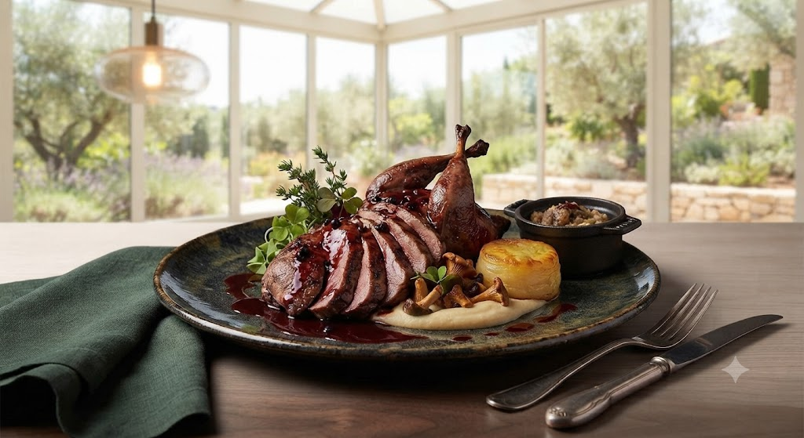
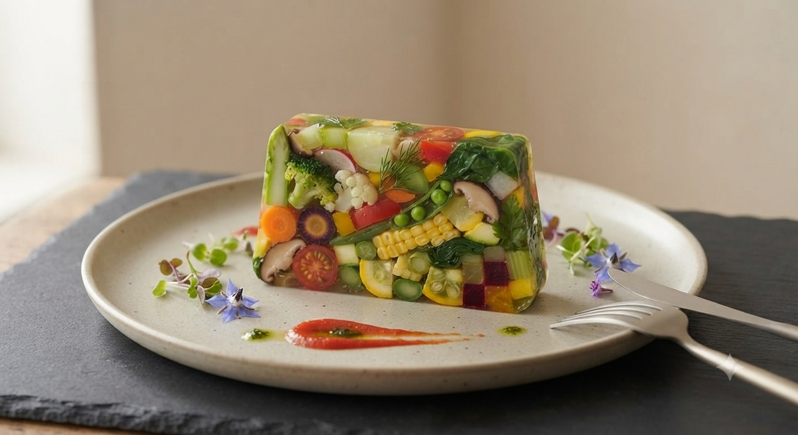
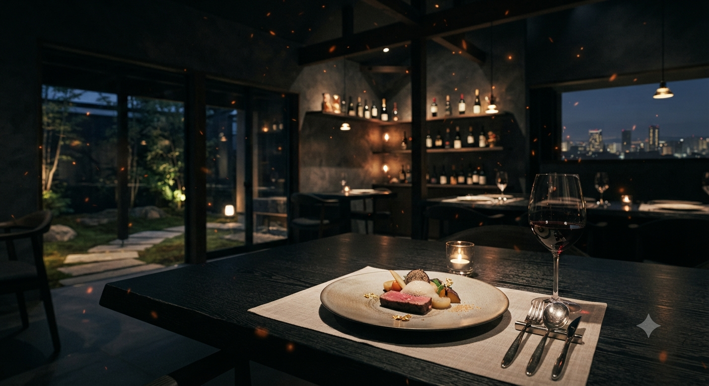
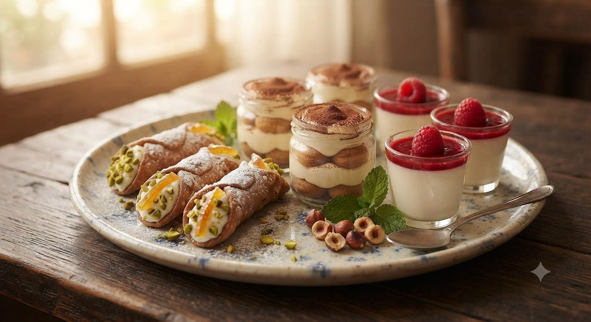

札幌駅徒歩3分。地下の静寂に佇むイタリアン。
安平町の野菜、平取町の和牛、猟人が打つ雷鳥。
余計なものは足さない。素材本来の「力」を味わう贅沢を。

信頼する農家から届く、嘘のない食材だけを使用しています。
「サラブレッドの街」安平町や「和牛の里」平取町。直接足を運び納得した食材のみを、鮮度そのままに提供します。
「毎日食べても疲れない」ことを大切に。化学調味料を一切使わず、素材の旨味を丁寧に引き出した澄んだスープ。
20年前から変わらぬ味。大通りから現在の地下店舗へ移転しても、リピーターが絶えない理由は、一品一品への愚直な丁寧さにあります。

女性に人気の優しい一杯。自分ですりおろす山葵を添えて。


地下のお店で良い雰囲気の内観。ランチは雷鳥のみで、出てくるのも早い。別添えの山葵が刺激的で癖になります。サービスでいただいたジャスミンティーも嬉しい心遣いでした。
— 出張ランチでご利用のお客様
20年ぶりにオムライスをいただきましたが、味も変わらず最高でした。お店の方も親切で、相手の目を見て話してくれるのが印象的。子どもも喜んで食べていました。
— 20年来のリピーター様
「もっと身近に、もっと特別な時間を。」
ケーダッシュが準備している、新しい食の体験とサービスです。
「遠方でもあの味を食べたい」という声にお応えし、名物雷鳥とこだわりスープをご自宅へ直接お届け。特別なギフトにも最適です。
安平町の旬野菜や平取和牛を使った特選パスタソースと季節のドルチェが毎月届くプレミアム定期便。おうちがリストランテに変わります。
新サービスの開始案内や限定モニター募集は公式Instagramにて優先してお知らせします。
Instagramで最新情報をチェックする →